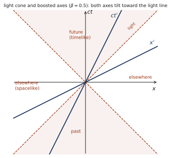

Learn
Special relativity
Two postulates, the same laws in every inertial frame and the same speed of light in every inertial frame, force us to give up absolute time. From them follow the Lorentz transformation, time dilation, length contraction, relativistic velocity addition, the Doppler effect, and the relations E = γmc² and E² = p²c² + m²c⁴. Sources: slides STR.tex:113 to :366, Beiser ch 1 (1.1–1.10), MT ch 14, the tutorial (04-tutorials/relativity), and your sheet notes/17-str-sheet.md. The questions follow the 2025 midsem (Q2, Q13), the 2026 midsem Q11, HW 2b and the tutorial's rocket problem.
Study path. Read Learn once, keep Reference open for the formulas and the "what to do without notes" list, then do Practice: try each question on paper before you open its solution.
Why relativity was needed
Newtonian mechanics satisfies a principle of relativity of its own. If one frame moves at constant velocity relative to another, the Galilean transformation x′ = x − vt, t′ = t carries the laws of motion over unchanged, and no mechanical experiment can tell which frame is "really" at rest. Electromagnetism does not fit this scheme. Maxwell's equations predict that light travels at one definite speed c, and under a Galilean transformation the wave equation changes its form, so the speed would be c − v in a moving frame. There was also an awkward asymmetry in the theory itself. A coil moving past a stationary magnet has a current driven by the magnetic force qv × B, while a magnet moving past a stationary coil drives the same current through an induced electric field, although only the relative motion can matter. Experiments, most famously that of Michelson and Morley, found no sign of any motion of the earth through a medium that might carry light. Einstein resolved the conflict in 1905 by taking two postulates as basic: the laws of physics are the same in all inertial frames, and the speed of light in free space has the same value c in all inertial frames, whatever the motion of the source or observer.
Relativity of simultaneity
The second postulate looks harmless, but it overturns the idea of a universal time. Consider an observer at the middle of a moving train who receives two flashes, one from each end, at the same moment. Since the flashes travelled equal distances at the same speed c, the observer concludes that they were emitted simultaneously. An observer on the platform sees the train moving forward during the flight of the light, so the rear flash had further to go to reach the mid-point than the front one. Since light also travels at c in the platform frame, the rear flash must have been emitted first. Two events that are simultaneous in one frame are not, in general, simultaneous in another. Only events at the same place can be agreed by everyone to be simultaneous.
The Lorentz transformation
The Lorentz transformation gives the precise relation between the coordinates of an event in two frames. Suppose frame K′ moves at speed v along the x-axis of K and the origins coincide at t = t′ = 0. The transformation must be linear, it must reduce to the Galilean one at low speeds, and the inverse must have the same form with v replaced by −v, as the first postulate requires. Demanding in addition that a light flash from the origin travels as x = ct in K and as x′ = ct′ in K′ fixes the result: x′ = γ(x − vt), t′ = γ(t − vx/c²), with y and z unchanged and γ = 1/√(1 − v²/c²). The term vx/c² in the time equation is the relativity of simultaneity written as a formula. When v is small compared with c, γ is nearly one, this term is negligible, and the Galilean transformation is recovered.
Time dilation and length contraction
Two striking consequences follow. A clock at rest in one frame ticks at intervals Δt₀, its proper time. Since the ticks happen at the same place in that frame, the Lorentz transformation shows that an observer moving relative to the clock measures intervals Δt = γΔt₀. A moving clock runs slow. Muons produced high in the atmosphere live only 2.2 μs in their own frame, and without this effect they could travel only about 0.66 km, yet they are observed in large numbers at sea level. Lengths are affected in a complementary way. To measure the length of a moving rod, an observer must record the positions of its two ends at the same time in their own frame, and the Lorentz transformation then gives L = L₀/γ, where L₀ is the proper length measured in the rod's rest frame. The contraction occurs only along the direction of motion. In the muon's frame it is the atmosphere that is contracted, so that the two accounts agree on whether the muon arrives.
Symmetry and the twin paradox
These effects are entirely symmetric between two inertial observers: each finds the other's clocks slow and the other's rods short. There is no contradiction, because the two observers disagree about which events are simultaneous. The twin paradox appears to break this symmetry. One twin stays at home while the other travels to a distant star and returns, and the traveller is found to be younger. The situations of the two are not equivalent, however. The traveller changes from one inertial frame to another at the turning point, while the stay-at-home twin remains in a single inertial frame throughout, so it is the traveller whose clock records less time.
Velocity addition and the Doppler effect
Velocities cannot be added in the ordinary way either. If a body moves at u′ in frame K′, which itself moves at v relative to K, its speed in K is u = (u′ + v)/(1 + u′v/c²). For small speeds the denominator is close to one and this is ordinary addition. But putting u′ = c gives u = c for any v, so the formula is consistent with the second postulate, and no combination of speeds below c can ever produce a speed greater than c. The same reasoning applied to the arrival of successive wave crests from a moving source gives the relativistic Doppler effect. For a source and observer moving apart at relative speed v, the observed frequency is ν = ν₀√((1 − β)/(1 + β)), with β = v/c. Unlike sound, light needs no medium, so only the relative velocity enters. The red shift of light from distant galaxies, which increases with their distance, is the evidence that the universe is expanding.
Relativistic momentum and energy
Mechanics must also be revised. If momentum is defined as mv, it is not conserved in collisions viewed from different frames, because velocities transform in the new way. Conservation is restored by defining p = γmv. The work done in accelerating a body from rest to speed v is then K = (γ − 1)mc², which suggests that the total energy of a body is E = γmc² and that a body at rest has the rest energy E₀ = mc². Mass is a form of energy. Eliminating the velocity gives the useful relation E² = (pc)² + (mc²)². When v is small, expanding γ gives K ≈ ½mv² plus a small correction of order v²/c², so Newtonian mechanics is again the low-speed limit. A particle of zero rest mass, such as the photon, must always travel at c and has E = pc.
The spacetime interval
In every frame, observers disagree about the time Δt and the distance Δx between two events, but they agree on the combination (Δs)² = Δx² + Δy² + Δz² − c²Δt². This spacetime interval is invariant under the Lorentz transformation, just as the length of a vector is invariant under rotation. Its sign has a physical meaning. If it is negative (timelike, in the slides' convention), there is a frame in which the two events happen at the same place, and one can cause the other. If it is positive (spacelike), there is a frame in which they are simultaneous, and neither can influence the other.

Figure. Spacetime diagram. Light travels at . Events inside the cone are timelike-separated from the origin (past or future); events outside are spacelike. A boost tilts both axes toward the light line by the same angle.
Electricity, magnetism and gravity
Relativity also unites electricity and magnetism. A line of charges at rest exerts a purely electric force on a nearby charge. In a frame where the line moves, length contraction increases the charge density and therefore the electric force, but the moving charges now form a current, and the magnetic force on the charge exactly cancels the excess. Electric and magnetic forces are the same interaction seen from different frames. Finally, the general theory extends these ideas to gravity. By the principle of equivalence, gravity is locally indistinguishable from acceleration, so light, which bends in an accelerating laboratory, must also bend in a gravitational field. The deflection of starlight passing the sun, observed in 1919, confirmed the prediction.